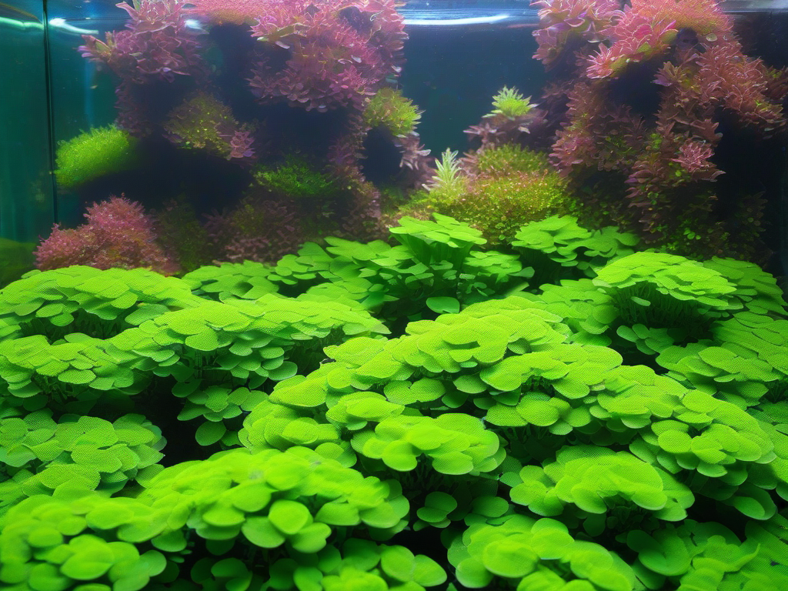

Ein dichter, sattgrüner Pflanzenteppich am Boden des Aquariums ist der Traum vieler Aquascaper und Pflanzenliebhaber. Bodendecker und Teppichpflanzen verwandeln den kahlen Bodengrund in eine lebendige, strukturierte Landschaft, die nicht nur atemberaubend aussieht, sondern auch einen positiven Einfluss auf das gesamte Aquarienökosystem hat. Sie bieten Kleinstlebewesen und Jungfischen Unterschlupf, verhindern Bodenanlösungen und sind hervorragende Nährstoffzehrer, die Algen keine Chance lassen. Doch nicht jede Teppichpflanze ist gleich pflegeleicht. Manche Arten wachsen auch ohne CO₂ und starkes Licht, andere brauchen eine High-Tech-Umgebung. In diesem Guide erfährst du alles über die besten Bodendecker für dein Aquarium, ihre Pflegeansprüche und wie du einen geschlossenen Pflanzenteppich kultivierst.
Der Begriff „Teppichpflanze“ ist nicht botanisch definiert, sondern beschreibt Pflanzen, die flach und flächendeckend über den Bodengrund wachsen. Sie bleiben niedrig – meist unter zehn Zentimetern – und bilden durch Ausläufer, Seitentriebe oder Verzweigung einen dichten Bewuchs. Im Aquascaping sind sie essenziell für die klassische Dreiteilung in Vorder-, Mittel- und Hintergrund. Ein guter Bodendecker zieht den Blick in die Tiefe des Beckens und schafft eine natürliche Perspektive.
Nicht jeder Aquarianer möchte oder kann in eine CO₂-Anlage investieren. Für Einsteiger gibt es glücklicherweise mehrere Bodendecker, die auch ohne zusätzliche CO₂-Düngung einen akzeptablen Teppich bilden. Sie wachsen zwar langsamer als unter CO₂, sind aber deutlich pflegeleichter und verzeihen den einen oder anderen Anfängerfehler.
Staurogyne repens ist der beliebteste Bodendecker für mittlere Ansprüche. Sie bildet dichte, hellgrüne Büschel mit festen Blättern und bleibt mit etwa 5 bis 10 Zentimetern Höhe kompakt. Die Pflanze stammt aus Südamerika und wächst dort an Flussufern. Sie kommt mit mittlerem Licht gut zurecht und braucht kein zwingend CO₂, profitiert aber von einer regelmäßigen Nährstoffversorgung. Staurogyne repens wird in kleinen Büscheln mit einer Pinzette in den Bodengrund gesetzt. Nach einer Eingewöhnungsphase von ein bis zwei Wochen beginnt sie, Seitentriebe zu bilden und sich auszubreiten. Regelmäßiger Rückschnitt fördert die Verzweigung und hält die Pflanze niedrig.
Die Zwergnadelsimse Eleocharis acicularis ist der Klassiker unter den Teppichpflanzen. Sie bildet feine, grasähnliche Halme, die an einen englischen Rasen erinnern. Die Pflanze vermehrt sich über Ausläufer und breitet sich mit der Zeit flächendeckend aus. Ohne CO₂ wächst sie langsamer, wird aber mit geduldiger Pflege ebenfalls zu einem dichten Teppich. Wichtig ist ein nährstoffreicher Bodengrund und eine gute Beleuchtung (mindestens 0,5 Watt pro Liter bei LED). Der erste Rückschnitt sollte erfolgen, wenn die Halme etwa 8 bis 10 Zentimeter hoch sind. Ein scharfer Rückschnitt auf 3 bis 4 Zentimeter regt die Pflanze zu neuem, dichterem Austrieb an.
Diese Pflanze wird oft mit dem anspruchsvollen HC Cuba verwechselt, ist aber deutlich pflegeleichter. Sie bildet kleine, runde Blättchen an feinen Stängeln und wächst kriechend bis aufrecht. Unter guten Lichtverhältnissen breitet sie sich flächendeckend aus und bildet einen dichten, etwa 3 bis 6 Zentimeter hohen Teppich. Ohne CO₂ wächst sie etwas langsamer, ist aber gut machbar. Regelmäßiges Einkürzen der Triebe ist notwendig, damit sie kompakt bleibt.
Wer einen perfekten, geschlossenen Pflanzenteppich möchte, kommt um eine CO₂-Anlage und starke Beleuchtung nicht herum. Die folgenden Pflanzen sind die Königsklasse der Bodendecker. Sie belohnen den höheren Aufwand mit spektakulären Ergebnissen.
HC Cuba ist die berühmteste Teppichpflanze im Aquascaping. Sie bildet einen dichten, moosartigen Polster aus winzigen, hellgrünen Blättern. Keine andere Pflanze erzeugt einen so gleichmäßigen, geschlossenen Teppich. Allerdings ist HC Cuba anspruchsvoll: Sie braucht starkes Licht (ab 1 Watt pro Liter), eine stabile CO₂-Versorgung und eine ausgewogene Nährstoffdüngung. Bei Nährstoffmangel oder CO₂-Schwankungen fault sie schnell ein. Die Pflanze wird in kleinen Portionen (2×2 cm) mit einer Pinzette im Abstand von 2 bis 3 Zentimetern eingepflanzt. Nach etwa vier bis sechs Wochen sollten die einzelnen Portionen zusammenwachsen. Regelmäßiger, leichter Rückschnitt hält den Teppich kompakt.
Glossostigma ist eine weitere High-Tech-Teppichpflanze, die in der Natur an flachen Ufern in Australien und Neuseeland vorkommt. Sie bildet sehr kleine, runde Blättchen, die dicht am Boden anliegen. Unter starkem Licht und mit CO₂ wächst sie extrem flach und dicht – fast wie ein grüner Film auf dem Bodengrund. Glossostigma reagiert empfindlich auf zu wenig Licht: Dann streckt sie sich in die Höhe und verliert ihren Teppichcharakter. Die Einpflanzung erfolgt wie bei HC Cuba in kleinen Büscheln. Ein regelmäßiger, scharfer Rückschnitt auf 1 bis 2 Zentimeter ist wichtig, um die Pflanze flach und kompakt zu halten.
Ein dichter Pflanzenteppich steht und fällt mit dem richtigen Bodengrund. Normaler Kies oder Sand ist für die meisten Bodendecker ungeeignet, weil er zu wenig Nährstoffe speichert und die feinen Wurzeln sich nicht gut ausbreiten können. Empfehlenswert ist ein Nährboden (Soil), der speziell für Pflanzenaquarien entwickelt wurde. Soil ist leicht, krümelig und enthält bereits natürliche Nährstoffe. Er senkt den pH-Wert leicht ab und puffert die Karbonathärte – ideale Bedingungen für die meisten Teppichpflanzen.
Wer keinen Soil verwenden möchte, kann auch einen nährstoffreichen Kies mit einer Unterboden-Düngung (Wurzeltabs) kombinieren. Dabei werden Düngertabletten in den unteren Bereich des Bodengrunds eingebracht. Die Wurzeln der Bodendecker wachsen nach unten und versorgen sich aus dieser Nährstoffquelle. Zusätzlich ist ein regelmäßiger Flüssigdünger (Makro- und Mikronährstoffe) notwendig, weil Bodendecker ihre Nährstoffe auch über die Blätter aufnehmen.
Die richtige Pflanztechnik ist entscheidend für ein gleichmäßiges Ergebnis. So gehst du vor:
Geduld ist die wichtigste Tugend bei Teppichpflanzen. In den ersten zwei Wochen passiert scheinbar nichts – unter der Erde entwickeln sich die Wurzeln. Danach beginnt das sichtbare Wachstum. Gib nicht auf, der Teppich kommt!
Teppichpflanzen müssen regelmäßig geschnitten werden, sonst werden sie hoch und verlieren ihren dichten Charakter. Der erste Rückschnitt erfolgt, wenn die Pflanzen etwa die doppelte gewünschte Höhe erreicht haben. Bei HC Cuba und Glossostigma sind das 2 bis 3 Zentimeter, bei Staurogyne repens 6 bis 8 Zentimeter. Schneide mit einer scharfen, gebogenen Schere die Triebe auf die Hälfte zurück. Der Rückschnitt regt die Pflanze zur Verzweigung an – mehr Triebe bedeuten einen dichteren Teppich.
Nach dem Rückschnitt entstehen schnell neue Triebe aus den Blattachseln. Wiederhole den Vorgang, sobald die Pflanzen die gewünschte Höhe überschritten haben. Bei gut wachsenden Becken kann das alle ein bis zwei Wochen nötig sein. Das Schnittgut lässt sich übrigens hervorragend für neue Pflanzungen verwenden – aus den Stecklingen wachsen neue Pflanzen heran.
Für die Arbeit mit Bodendeckern brauchst du eine gute Pinzette, eine scharfe Aquarienschere und den passenden Dünger:
Ein gepflegter Pflanzenteppich ist empfindlich gegenüber wühlenden Fischen. Große Cichliden oder Bodenbewohner wie Dornaugen und Panzerwelse können den Teppich anheben und zerstören. Besser geeignet sind kleine, friedliche Fische, die sich im freien Wasser aufhalten. Salmler wie Neonsalmler, Rote von Rio oder Glühlichtsalmler stören den Teppich nicht und setzen farbliche Akzente. Auch Zwerggarnelen (Red Cherry, Blue Dream) sind ideale Mitbewohner – sie weiden den Teppich nach Algen ab und bleiben klein. Einige Zwergbuntbarsche wie Apistogramma borellii sind ebenfalls geeignet, solange sie nicht zu stark im Bodengrund graben.
Bodendecker und Teppichpflanzen sind die Königsdisziplin der Aquarienpflanzenpflege. Sie erfordern etwas mehr Aufmerksamkeit als einfache Stängelpflanzen, belohnen aber mit einem der schönsten Anblicke, die ein Aquarium zu bieten hat. Egal, ob du mit pflegeleichten Arten wie Eleocharis acicularis beginnst oder dich gleich an HC Cuba wagst – der Schlüssel zum Erfolg sind drei Dinge: ausreichend Licht, eine stabile Nährstoffversorgung und regelmäßiger Rückschnitt. Mit diesen Grundlagen und ein wenig Geduld wirst auch du schon bald einen dichten, sattgrünen Teppich dein Eigen nennen können.
Mehr zum Thema Aquascaping und zur Gestaltung deines Aquariums findest du in unserem Aquascaping für Anfänger-Guide. Und falls du noch auf der Suche nach den richtigen Pflanzen bist, wirf einen Blick in unseren Aquarienpflanzen-Ratgeber.